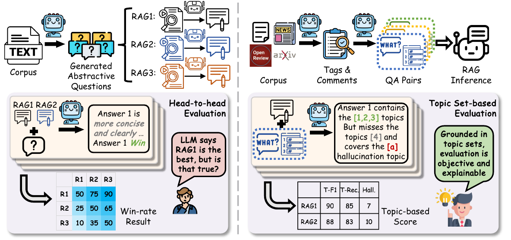
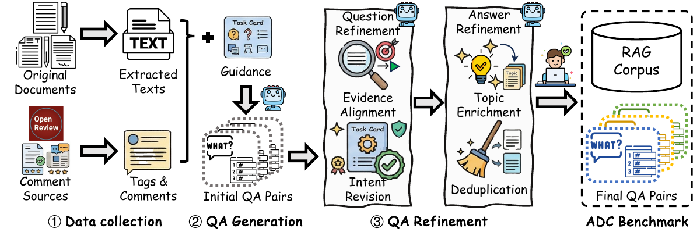
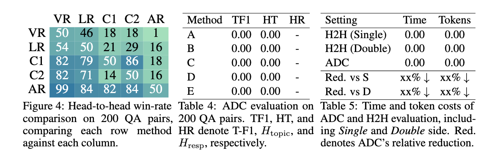

Retrieval-Augmented Generation (RAG) has proven effective in integrating external knowledge into large language models (LLMs) for solving question-answer (QA) tasks. The state-of-the-art RAG approaches often use the graph data as the external data since they capture the rich semantic information and link relationships between entities. However, existing graph-based RAG approaches cannot accurately identify the relevant information from the graph and also consume large numbers of tokens in the online retrieval process. To address these issues, we introduce a novel graph-based RAG approach, called Attributed Community-based Hierarchical RAG (ArchRAG), by augmenting the question using attributed communities, and also introducing a novel LLM-based hierarchical clustering method. To retrieve the most relevant information from the graph for the question, we build a novel hierarchical index structure for the attributed communities and develop an effective online retrieval method. Experimental results demonstrate that ArchRAG outperforms existing methods in terms of both accuracy and token cost.

ADC is a benchmark for abstractive document comprehension in retrieval-augmented question answering. Unlike conventional QA benchmarks that emphasize short answers or extractive evidence lookup, ADC is designed to evaluate whether a RAG system can synthesize information from long documents and produce responses that are coherent, selective, and faithful to the source content. Such questions commonly require document-level summaries, structured comparisons, thematic organization, and temporally grounded synthesis rather than isolated factual snippets. ADC is built over two source domains, academic papers and news documents, and covers five abstractive task types.
Formally, ADC consists of a document corpus \(D\) and a set of QA pairs. Each QA pair is represented as \((q, T, H, m)\), where \(q\) is an abstractive question, \(T = \{\tau_1, \tau_2, \cdots, \tau_n\}\) is the reference topic set, \(H = \{h_1, h_2, \cdots, h_k\}\) is the hallucination set, and \(m\) denotes the associated metadata, including the aligned evidence set \(E\), the task type, the retrieval difficulty level, and the source scope. The set \(T\) is constructed from high-level summary signals and used by our reference-based evaluation method to assess answer coverage, while \(H\) records relevant but incorrect topics and is used to assess hallucinated content.

ADC is constructed through a three-stage curation pipeline, as illustrated above. The pipeline converts heterogeneous source materials into abstractive QA pairs grounded in curated document collections, with reference-backed evidence and comprehensive topic-set answers.
| Task Type | #Q | #Docs | Corpus Tok. | AM Tok. | # C |
|---|---|---|---|---|---|
| Single-Sum | 422 | 422 | 9,681,570 | 322,719 | 30 |
| Pair-Comp | 99 | 54 | 1,565,393 | 597,178 | 5 |
| Multi-Comp | 42 | 59 | 1,670,693 | 457,473 | 5 |
| Enum | 150 | 63 | 1,728,257 | 427,368 | 7 |
| Temp | 156 | 1,579 | 1,434,193 | 120,514 | 7 |
| Total | 869 | 2,096 | 16,080,106 | 347,963 | 54 |
Our core idea is to evaluate ADC answers in the same spirit as grading a composition or a reading-comprehension response by checking whether the answer covers the required key points. For ADC, a good answer should cover the reference topics in \(T\) as completely as possible and avoid hallucinated content.
We then compute topic precision, topic recall, and topic F1 as
\[ \text{T-Prec} = \frac{|S(q, y)|}{\max(1,\,|\hat{T}(q, y)|)}, \quad \text{T-Rec} = \frac{|C(q, y)|}{|T|}, \quad \text{T-F1} = \frac{2\,\text{T-Prec}\cdot\text{T-Rec}}{\text{T-Prec}+\text{T-Rec}}. \]Based on \(C_H(q, y)\), we define a topic-level hallucination score and a response-level hallucination rate as
\[ H_{\mathrm{topic}}(q, y) = \frac{|C_H(q, y)|}{|H|}, \quad H_{\mathrm{resp}}(q, y) = \mathbb{I}\!\left[|C_H(q, y)| > 0\right]. \]
Performance comparison of representative RAG methods on ADC under the three retrieval settings and their overall averages. TF1, HT, and HR denote \(\text{T-F1}\), \(H_{\mathrm{topic}}\), and \(H_{\mathrm{resp}}\), respectively. The best and second-best results are marked in bold and underlined, respectively.
| Method | Simple | Middle | Hard | Overall | ||||||||
|---|---|---|---|---|---|---|---|---|---|---|---|---|
| TF1 | HT | HR | TF1 | HT | HR | TF1 | HT | HR | TF1 | HT | HR | |
| Vanilla RAG | - | - | - | - | - | - | - | - | - | - | - | - |
| LightRAG-Low | - | - | - | - | - | - | - | - | - | - | - | - |
| LightRAG-High | - | - | - | - | - | - | - | - | - | - | - | - |
| LightRAG-Hybrid | - | - | - | - | - | - | - | - | - | - | - | - |
| GraphRAG-Local | - | - | - | - | - | - | - | - | - | - | - | - |
| GraphRAG-Global | - | - | - | - | - | - | - | - | - | - | - | - |
| HippoRAG | - | - | - | - | - | - | - | - | - | - | - | - |
| RAPTOR | - | - | - | - | - | - | - | - | - | - | - | - |
| ArchRAG | - | - | - | - | - | - | - | - | - | - | - | - |
| KET-RAG | - | - | - | - | - | - | - | - | - | - | - | - |
| HiRAG | - | - | - | - | - | - | - | - | - | - | - | - |
@article{adc_benchmark_2026,
title = {Abstractive Document Comprehension: A Comprehensive Benchmark for RAG-based Question Answering},
author = {TBD},
journal = {arXiv},
year = {2026}
}